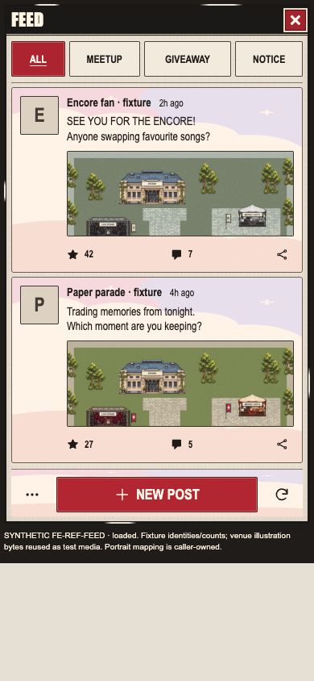
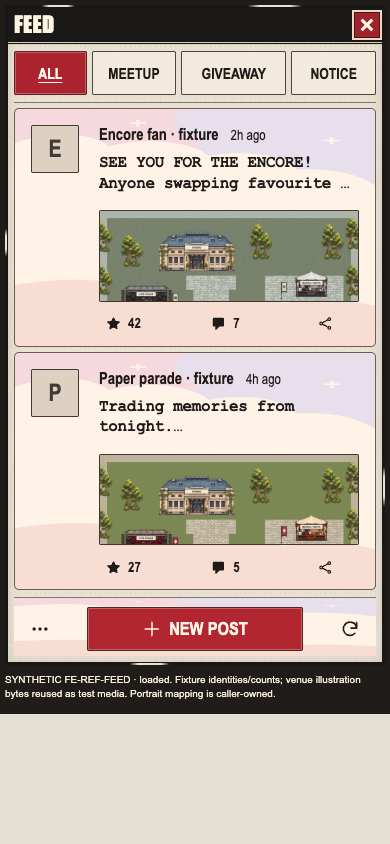
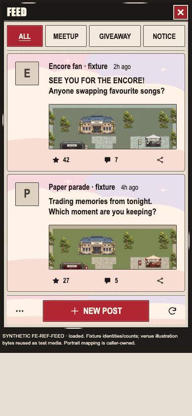
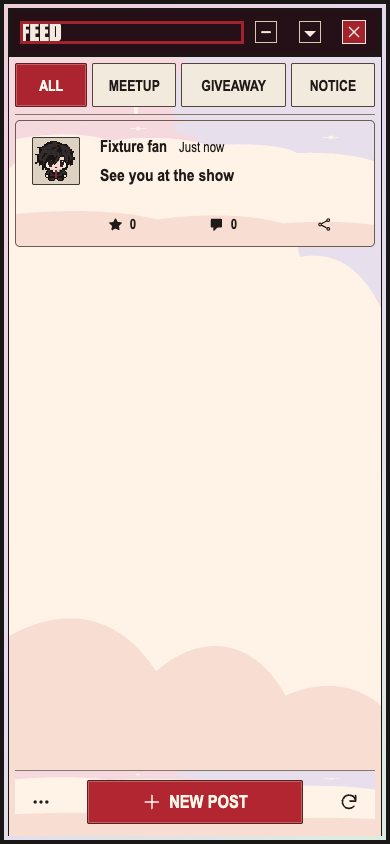

Baseline and both iterations were captured in the named Feed resource round. Final iteration passes the bounded fixture checks. Full photo parity, live services and physical-device acceptance remain open.
Evidence only. The photo Feed panel is normalized from 255px to 390px width. Application captures use functioning existing components and explicitly synthetic fixture content. The cute backgrounds and selected-character framing have separate owners. Reference identities, counts and attachment images are not product data.




Scope, checks and remaining differences · Baseline report · First iteration report · Final iteration report · Resource release